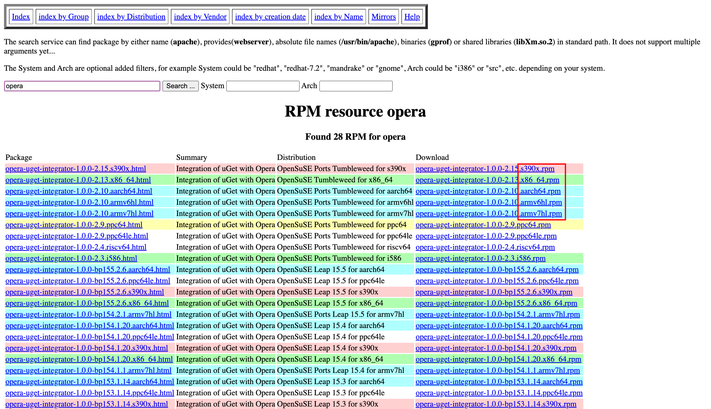

RPM & yum¶
- Package Management Tool
- RPM (Red Hat Package Manager, for Red Hat, CentOS, Fedora): yum (.rpm)
- Debian system (like ubuntu): apt-get
1. RPM: Redhat Package Manager¶
1.1 RPM WHAT？¶
- RPM 是一种标准化的软件包管理格式和软件包管理工具。
- 目的：提供一种标准的方式来打包、分发和安装软件。
- 原理：RPM 包是一个存档文件，将软件及其相关文件、配置信息、依赖关系等打包成一个单独的RPM包，以
.rpm为文件扩展名。 - 意义：它使得在支持RPM的Linux发行版上安装、管理和分发软件变得更加方便和可靠。
- 缺点：RPM 可以定义软件包之间的依赖关系，但不能解决软件包依赖性问题。
1.2 WHERE?¶

Rpm包在linux系统中常见的架构标识
- x86_64：表示64位x86架构，适用于使用64位处理器的计算机。
- i386、i686：表示32位x86架构，适用于使用32位处理器的计算机。
- armv6hl、armv7hl、aarch64：这些是ARM架构的不同变体。armv6hl适用于较旧的ARMv6架构，armv7hl适用于支持ARMv7指令集的设备，而aarch64适用于64位ARM架构。
- ppc64le：表示IBM Power架构的64位低能耗变体，适用于POWER8和POWER9处理器。
- s390x：表示IBM System z架构的64位变体，适用于IBM的大型机和主机系统。
除了上述常见的架构标识外，还有一些其他特定架构的标识，如mips、mipsel、sparc等，它们在特定的硬件平台上使用。
这些架构标识有助于确保选择适用于特定计算机架构的正确软件包，以确保兼容性和性能。
1.3 HOW?¶
# rpm
# RPM Package Manager.
# tags: [ packaging ]
# ---
# Show version of httpd package:
$ rpm -q httpd # (1)
# To install a package:
$ rpm -ivh <rpm> # (2)
# To remove a package:
$ rpm -e <package> # (3)
# For equivalent commands in other package managers, see <https://wiki.archlinux.org/title/Pacman/Rosetta>.
# More information: <https://rpm.org/>.
q- queryi- install;v- verbose;h- hashe- erase
2. yum¶
Yum（Yellowdog Updater, Modified）是一个在Linux系统中常用的软件包管理工具，它可以帮助用户轻松地安装、更新和删除软件包。
2.1 yum WHAT？¶
- 基于 RPM 的简化软件包管理的工具。
- 最初是为 Fedora 发行版开发的，现在也被许多其他 Linux 发行版所采用。
- 会自动处理软件包之间的依赖关系，确保所需的其他软件包也会被正确地安装和配置。
- 可以从预先配置的软件仓库中获取软件包。
2.2 HOW?¶
# yum
# Package management utility for RHEL, Fedora, and CentOS (for older versions).
# ---
# tags: [ packaging ]
# ---
# 准备工作
$ yum clean all
$ yum makecache
# Upgrade installed packages to the newest available versions:
$ yum upgrade
# To search for a package: 匹配名称和简介来搜索
$ yum search <package>
# 安装、更新、删除
# To install the latest version of a new package:
$ yum install <package> <package> <...>
# Install a new package and assume yes to all questions (also works with update, great for automated updates):
$ yum -y install package
# -y, --yes: 自动模式，对所有的提问都回答 yes
$ yum update <package>
# To remove a package:
$ yum remove <package>
# 描述和简介信息
# List packages matching <phrase>:
$ yum list <phrase>
$ yum list installed # 显示已装的软件包
$ yum list available # 显示可装（但未装）的软件包
# To find the dependencies of a package: 列出所有依赖关系
yum deplist <package>
# To find information about a package:
$ yum info <package>
# For equivalent commands in other package managers, see <https://wiki.archlinux.org/title/Pacman/Rosetta>.
# More information: <https://manned.org/yum>.
2.3 yum 的工作原理¶
-
软件仓库：提供软件包索引、信息（以供查询）和软件包（以供下载）
Yum 通过与软件仓库进行交互来获取软件包信息。软件仓库是存储了大量软件包及其相关信息的服务器，用户可以从中获取需要的软件包。
-
依赖解决：Yum 能够处理软件包之间的依赖关系。当用户安装一个软件包时，Yum 会自动检查并解决其所依赖的其他软件包。它会查找并安装所需的依赖包，以确保软件包能够正常运行。
-
本地缓存：Yum 会在本地系统上建立一个缓存，将软件包的信息和文件保存在本地，利用本地缓存提高性能。这样，当用户再次需要同一软件包时，Yum 可以直接从本地缓存中获取，而无需再次从网络上下载。
-
仓库配置：用户可以配置 Yum 以使用特定的软件仓库。配置文件中包含了软件仓库的地址、存储库的设置、软件包的优先级等信息。
2.4 配置 yum 的软件仓库¶
2.4.1 yum 常用的软件仓库及其介绍¶
2.4.2 CentOS 官方软件源特点¶
- 不包括有版权争议的软件
- 软件包比较老旧
- 没有 eclipse、mplayer
2.4.2 /etc/yum.repos.d/¶
/etc 目录: 存放系统配置文件。
/etc/yum.repos.d/ 目录: 专门用于存放 Yum 软件仓库的配置文件。
配置文件命名规则：每个 Yum 软件仓库都有一个对应的配置文件，通常以 .repo 扩展名结尾。配置文件的命名规则一般为 <仓库名称>.repo，其中 <仓库名称> 是自定义的仓库标识符。
文件内容：每个配置文件包含仓库的名称、URL、GPG密钥、软件包信息等。这些信息定义了如何获取软件包、软件包的来源、安全验证等。配置文件使用INI格式，包括段落（section）和键值对（key-value）的形式。
多仓库支持：可以在 /etc/yum.repos.d/ 目录下配置多个仓库的配置文件，每个配置文件代表一个不同的软件仓库。这样可以方便地管理和切换不同的软件源，以获取所需的软件包。
管理方式：可以通过创建、编辑或删除 /etc/yum.repos.d/ 目录下的配置文件来管理 Yum 软件仓库。